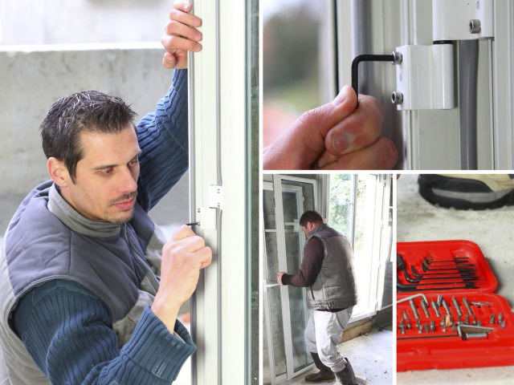
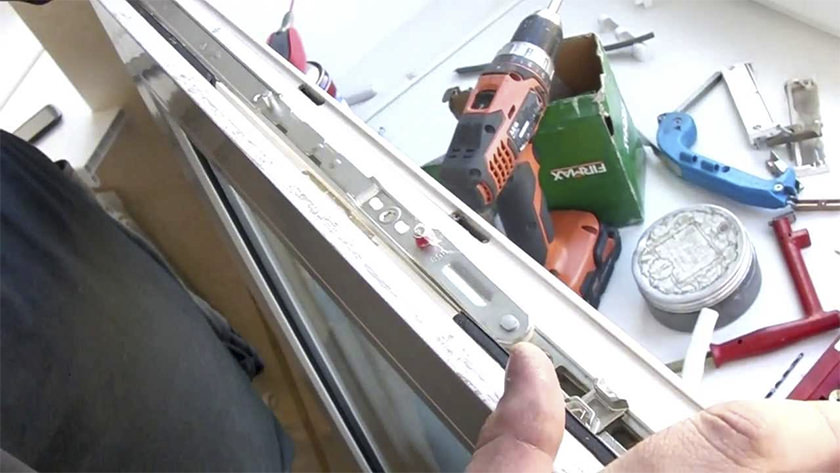

вызови мастера
прямо сейчас
и
получи
в
подарок
набор
по уходу за окнами
ремонт окон
  Завод окон «Интеграл Севастополь» осуществляет ремонт и послегарантийное обслуживание окон и дверей по заявкам организаций и предприятий, а также физических лиц. Нам доверяют, поскольку мы пунктуальны, ответственны и соблюдаем условия заключенным договоров.
Завод окон «Интеграл Севастополь» осуществляет ремонт пластиковых окон с гарантией!
Наши специалисты готовы решить любые проблемы, возникшие с установленными у Вас пластиковыми и алюминиевыми, окнами, дверями и прочими конструкциями, а также мы можем расширить функциональные возможности фурнитуры:
1. Установить микро-проветривание для максимального комфорта в зимний период.
2. Установить блокиратор поворота оконной ручки в открытом состоянии створки.
3. Установить балконную защёлку и осуществить полноценный ремонт пластиковых дверей балкона.
4. Дополнить комплектацию «детскими замками». С 1 сентября 2016 года вступили в силу изменения к ГОСТ 23166-99 «Блоки оконные. 5. Общие технические условия». Установка детских замков стала обязательной!
5. Установить ограничители открывания створки.
6. Выполнить производство и установку жалюзи.
7. Осуществить тонировку окон различными светозащитными плёнками, в том числе и противоударными.
8. Установить дополнительные противовзломные устройства или изменить конфигурацию окна (например, врезать створку в глухое окно.
Наши мастера имеют 12-ти летний опыт работы в гарантийно-ремонтных службах крупнейших производителей ПВХ окон.
Мы предлагаем работать по индивидуальному договору, который составляется исходя из Ваших потребностей или по разовым заявкам согласно прайс-листу.
вызови мастера
в севастополе осуществляется
по телефону или с помощью кнопки
вызвать мастера
на нашем сайте.